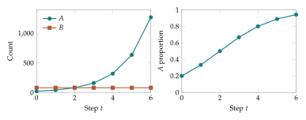

Measure change in a sequence, reconstruct a sequence from its changes, and then apply both operations to growing populations.
The discrete derivative
A sequence is a function whose input is a whole-number time step. Write its values as \(a_0,a_1,a_2,\ldots\). We measure the change from one step to the next by the forward difference $\(\Delta a_n=a_{n+1}-a_n.\)$ This is the discrete derivative. It records an exact change over one step, rather than a rate obtained from a limit. A positive difference means the quantity increases; a negative difference means it decreases. The size of the difference tells us how much.
For example, let \(a_n=n^2\). Then $\(\Delta a_n=(n+1)^2-n^2=2n+1.\)\( The first few values of \)a_n\( are \)0,1,4,9,16\( and their first differences are \)1,3,5,7\(. Taking differences again gives \)2,2,2\(. We write \)\Delta^2a_n=\Delta(\Delta a_n)$ and call it the second difference. Constant second differences are the discrete signature of quadratic sequences.
Summation is discrete integration
Suppose we know only that \(\Delta a_n=2n+1\) and \(a_0=0\). We can reconstruct the sequence by adding its changes: $\(a_n=a_0+\sum_{k=0}^{n-1}(2k+1)=n^2.\)\( More generally, any sequence satisfies the discrete fundamental theorem of calculus: \)\(\boxed{\sum_{k=m}^{n-1}\Delta a_k=a_n-a_m.}\)\( Every intermediate term cancels. This is why the identity is sometimes called telescoping. An antidifference of a sequence \)b_n\( is a sequence \)A_n\( such that \)\Delta A_n=b_n$. Two antidifferences differ by a constant.
To practice, suppose the number of messages received per day is \(b_n=3n+2\) for days \(n=0,1,\ldots\). The total received in the first four days is \(2+5+8+11=26\). The cumulative total \(S_n=\sum_{k=0}^{n-1}b_k\) satisfies \(\Delta S_n=b_n\) exactly.
From counts to proportions
Now let two types have counts \(A_n,B_n\) and multipliers \(w_A,w_B>0\). Their updates are \(A_{n+1}=w_AA_n\) and \(B_{n+1}=w_BB_n\). Define the proportion $\(x_n=\frac{A_n}{A_n+B_n}.\)\( Normalizing the new counts gives the recurrence \)\(x_{n+1}=\frac{w_Ax_n}{w_Ax_n+w_B(1-x_n)}.\)\( Subtract the old proportion to obtain a genuine discrete derivative: \)\(\boxed{\Delta x_n=\frac{x_n(1-x_n)(w_A-w_B)}{w_Ax_n+w_B(1-x_n)}.}\)\( This formula distinguishes changes in total population from changes in its composition. It also proves that \)0\leq x_n\leq1$ is preserved when the multipliers are positive.
Take \(x_0=1/4\), \(w_A=2\), and \(w_B=1\). The next proportion is \(2/5\), so \(\Delta x_0=2/5-1/4=3/20\). We know both where the state moved and exactly how far it moved along the probability interval.
Try it as calculus
Use the population demonstration to record \(x_0,\ldots,x_5\) and the difference sequence \(\Delta x_0,\ldots,\Delta x_4\). Add the differences and verify that their sum is \(x_5-x_0\). Then change the relative multiplier and repeat. This is the first glimpse of information geometry: the points are probability distributions, and our calculus measures changes between them.
Further investigations and applications
A population, a collection of observations, and a set of possible messages can all be described by lists of nonnegative numbers. Dividing each entry by the total produces proportions. The proportions retain the composition of the collection even when its size changes. This simple operation connects growth models with probability.
Our time variable takes the values \(t=0,1,2,\ldots\). One step might represent a generation, a round of a game, or the arrival of another batch of data. A rule that determines the next state from the present state is a difference equation. We will study such rules by calculating successive states, solving some rules exactly, and comparing quantities before and after a step.
Sequences and repeated multiplication
A sequence is an ordered list \(a_0,a_1,a_2,\ldots\). The recurrence \(a_{t+1}=r a_t\), together with an initial value \(a_0\), determines every term. Substitution gives \(a_1=ra_0\), \(a_2=r^2a_0\), and, after \(t\) steps, \[a_t=a_0r^t.\] Here \(r\) is the multiplier per step. A multiplier of \(1.2\) means a \(20\%\) increase in one step; a multiplier of \(0.8\) means a \(20\%\) decrease. The percentage change and the multiplier are different numbers.
Suppose two types, \(A\) and \(B\), have positive counts \(N_{A,t}\) and \(N_{B,t}\). With constant multipliers \(w_A,w_B>0\), their counts satisfy \[N_{A,t+1}=w_A N_{A,t},\qquad N_{B,t+1}=w_B N_{B,t}.\] Counts may be interpreted as expected counts or amounts when a multiplier produces a noninteger result. A model of literal indivisible individuals would require an additional sampling or rounding rule. We will state explicitly when such a rule is present.
Example. The same population at two scales
Begin with \(20\) individuals of type \(A\) and \(80\) of type \(B\). Let \(w_A=2\) and \(w_B=1\). The count pairs are \((20,80)\), \((40,80)\), \((80,80)\), and \((160,80)\). Their \(A\) proportions are \(1/5\), \(1/3\), \(1/2\), and \(2/3\). Beginning instead at \((200,800)\) produces exactly the same proportions. Multiplying every count by a common positive number leaves composition unchanged.
Normalization gives an exact update
Write \(x_t=N_{A,t}/(N_{A,t}+N_{B,t})\). The other proportion is \(1-x_t\). Dividing the new \(A\) count by the new total gives \[x_{t+1}=\frac{x_t w_A}{x_t w_A+(1-x_t)w_B}.\] The denominator is the average multiplier in the current population. It accounts for the growth of the total. We often write \(x^+\) for the next value of \(x\) and \(Z=xw_A+(1-x)w_B\) for this average. Then \[x^+-x=\frac{x(1-x)(w_A-w_B)}{Z}.\] To verify the formula, put \(xw_A/Z-x\) over the denominator \(Z\) and factor the numerator. This identity gives a complete sign test: an interior proportion increases when \(w_A>w_B\), decreases when \(w_A<w_B\), and remains fixed when the multipliers agree.
The endpoints also have a direct meaning. If \(x=0\), there are no \(A\) individuals to multiply, so \(x^+=0\). If \(x=1\), the next state is again \(1\). An absent type remains absent under this particular rule. Introducing a type by migration or mutation requires another term in the model.
Example. Both counts can grow while one proportion falls
Take equal initial counts and multipliers \(w_A=1.1\), \(w_B=1.3\). Both types increase in number. Nevertheless, \(x^+=1.1/(1.1+1.3)=11/24\), which is smaller than \(1/2\). The proportion compares one type with the total; its change depends on relative multiplication.
Odds turn normalization into multiplication
For \(0<x<1\), the odds of \(A\) relative to \(B\) are \(O=x/(1-x)\). Odds of \(3\) mean three \(A\) individuals per \(B\) individual, so the corresponding proportion is \(3/4\). Solving the definition for \(x\) gives \(x=O/(1+O)\).
The normalized rule has a particularly simple form in odds: \[O_{t+1}=\frac{x_{t+1}}{1-x_{t+1}}=\frac{w_A}{w_B}O_t.\] Let \(r=w_A/w_B\). Repeated multiplication now yields an explicit solution: \[O_t=O_0r^t,\qquad x_t=\frac{x_0r^t}{1-x_0+x_0r^t}.\] The expression is valid for every nonnegative integer \(t\) and for the endpoint initial states as well. It solves the normalized recurrence without computing intermediate states.
Example. Reaching a target proportion
Let \(x_0=1/5\) and \(r=2\). Then \(O_t=2^t/4\). The condition \(x_t\geq 0.9\) is equivalent to \(O_t\geq9\), hence to \(2^t\geq36\). Since \(2^5=32\) and \(2^6=64\), the first qualifying step is \(t=6\). Checking integer powers is often the clearest way to answer a discrete timing question.
If \(r>1\) and both types are initially present, the odds become arbitrarily large and \(x_t\) approaches \(1\). If \(r<1\), the odds approach zero and \(x_t\) approaches zero. Approaching an endpoint does not mean reaching it at a finite step: all finite powers of a positive number are positive, so both types remain present in exact arithmetic.
Probability vectors and weighted averages
For \(k\) types, let \(p_i\) denote the proportion of type \(i\). A probability vector satisfies \(p_i\geq0\) and \(\sum_{i=1}^k p_i=1\). The symbol \(\sum\) means addition over the indicated indices. Thus \(\sum_{i=1}^3p_i=p_1+p_2+p_3\).
With positive multipliers \(w_i\), the general update is \[p_i^+=\frac{p_iw_i}{Z},\qquad Z=\sum_{j=1}^k p_jw_j.\] All new entries are nonnegative, and adding them gives \(Z/Z=1\). This verifies that the rule remains inside the set of probability vectors. The quantity \(Z\) is a weighted average of the multipliers: a common type contributes more to the average than a rare type.
Example. Three types in one step
Let \(p=(1/2,1/3,1/6)\) and \(w=(1,2,3)\). The unnormalized entries are \((1/2,2/3,1/2)\) and their sum is \(5/3\). Dividing by that sum gives \(p^+=(3/10,2/5,3/10)\). The entries add to one, providing a quick arithmetic check.
Multiplying every \(w_i\) by the same positive constant leaves the normalized result unchanged, because that constant cancels between numerator and denominator. This freedom is useful when comparing models and when computing with very large or small weights.
What a finite model specifies
A recurrence needs an initial state and a rule for each step. Its interpretation also needs a meaning for one step. Changing a step from one generation to ten generations can change the appropriate multiplier. For constant multipliers, ten consecutive steps multiply the odds by \(r^{10}\). A state-dependent multiplier requires reevaluation after every step and usually cannot be replaced by its tenth power at the initial state.
Throughout the course, a fixed point is a state that one update leaves unchanged. A trajectory is the sequence of states generated by repeated updates. A quantity is invariant if it has exactly the same value at every step. These definitions refer to the stated recurrence. They will let us ask precise questions even when a closed formula for the trajectory is unavailable.

Reversing an update and checking a formula
An explicit formula is more than a shortcut. It lets us answer an inverse question: which initial composition would produce a given final composition? For a constant relative multiplier \(r>0\), the odds relation \(O_t=r^tO_0\) gives \(O_0=O_t/r^t\). Convert the observed final proportion to odds, divide by the accumulated multiplier, and convert back to a proportion. These operations reverse the update when both types are present.
Example. Reconstructing an initial composition
After four steps with relative multiplier \(3/2\), the A proportion is \(3/5\). Its final odds are \(3/2\). Dividing by \((3/2)^4=81/16\) gives initial odds \(8/27\). The initial A proportion was therefore \((8/27)/(1+8/27)=8/35\). Substituting \(x_0=8/35\) into the explicit formula recovers \(3/5\) at step four.
Sometimes the multiplier is unknown instead. If both \(O_0\) and \(O_t\) are known, then \(r^t=O_t/O_0\). For example, doubling the odds in three steps requires \(r=2^{1/3}\) per step. This is a relative multiplier. Many absolute pairs \((w_A,w_B)\) have this ratio, so compositions alone do not determine absolute population growth.
The exact solution can be verified by mathematical induction. First check the initial step \(t=0\), where the formula returns \(x_0\). Then assume the formula holds at a particular step \(t\). Substituting into the recurrence and canceling its common denominator gives the same formula with \(t+1\) in place of \(t\). These two statements establish the formula for every nonnegative integer step. Induction is particularly well suited to recurrences because the proof follows the way the sequence is constructed.
Replenishment gives an affine recurrence
Repeated multiplication is one useful mechanism; partial replacement is another. Suppose a fixed-size collection replaces a fraction \(\lambda\) of its members each round with an external source whose A proportion is \(q\). The next composition is \[x^+=(1-\lambda)x+\lambda q,\qquad 0<\lambda\leq1.\] This is an affine recurrence, consisting of a multiple of \(x\) plus a constant. Its fixed point is \(q\). Subtracting that fixed point gives a pure multiplication rule for the error: \[x^+-q=(1-\lambda)(x-q).\] Thus \(x_t=q+(1-\lambda)^t(x_0-q)\). This technique, shifting coordinates to a fixed point, will recur in later chapters.
Example. Replacing one quarter of a collection
Let \(x_0=0.8\), let the external source have proportion \(q=0.2\), and replace one quarter each round. Then \(x_t=0.2+0.6(3/4)^t\). The first two new values are \(0.65\) and \(0.5375\). Every step removes one quarter of the remaining difference from the source composition. It does not remove one quarter of the current A proportion.
The multiplying-growth model and the replacement model can be distinguished by their formulas. Positive multiplication preserves absence. Replacement introduces A from the source whenever \(q>0\) and \(\lambda>0\), even if A is initially absent. Choosing a recurrence therefore includes choosing the mechanisms that can change a population.
A calculation routine
To compute an update reliably, make a short table with columns for the old proportion, multiplier, and product. Add the products to obtain \(Z\), then divide every product by \(Z\). Check the new sum before rounding the displayed values. Store more digits than are printed, since feeding rounded output back into the next step changes the recurrence. Finally, compare a simple diagnostic, such as the two-type odds ratio, with its expected update. An independent identity often detects an indexing error that a unit-sum check alone would miss.
Exercises
- Starting from \(a_0=12\), list the first five terms of \(a_{t+1}=(3/2)a_t\), including \(a_0\).
- A quantity decreases by \(15\%\) each step. Write its multiplier and its value after eight steps in terms of its initial value.
- Normalize the count triples \((6,9,15)\) and \((14,21,35)\). Explain why the results agree.
- Starting with counts \((30,70)\) and multipliers \((3,2)\), find the counts and proportions after two steps.
- Derive the formula for \(x^+-x\) by putting the two fractions over a common denominator.
- Convert proportions \(1/4\), \(2/3\), and \(0.9\) to odds. Convert odds \(1/5\), \(1\), and \(7\) to proportions.
- Let \(x_0=1/10\) and \(w_A/w_B=3\). Find the first integer step at which \(x_t\geq1/2\).
- Prove that the general normalized update preserves the sum of the entries and preserves all zero entries.
- Compute one update for \(p=(1/4,1/4,1/2)\) and \(w=(4,2,1)\). Repeat with \(w=(20,10,5)\).
- Show that, for constant multipliers, \(p_{i,t}=p_{i,0}w_i^t/\sum_jp_{j,0}w_j^t\).
- A program rounds each new proportion to two decimal places. Explain how this can remove a type that the exact recurrence would preserve. Give numerical values.
- Two populations have the same initial composition but different total sizes. State assumptions under which their compositions remain identical, and describe one modification of the model that can break this conclusion.
Selected exercise solutions
1. The terms are \(12,18,27,81/2,243/4\). Each is obtained by multiplying its predecessor by \(3/2\).
3. Both triples normalize to \((1/5,3/10,1/2)\). The second count triple is \(7/3\) times the first, and this factor cancels upon normalization.
4. The new counts are \((90,140)\) and then \((270,280)\). The \(A\) proportions are \(9/23\) and \(27/55\).
7. Initial odds are \(1/9\). At step \(t\) they are \(3^t/9\). Reaching \(1/2\) means reaching odds at least one, which first occurs at \(t=2\).
9. The unnormalized weights are \((1,1/2,1/2)\), so the answer is \((1/2,1/4,1/4)\) in both calculations.
10. The formula holds at \(t=0\). If it holds at \(t\), multiplying each numerator by \(w_i\) and normalizing cancels the previous common denominator, giving the formula with \(t+1\). This is a proof by induction.